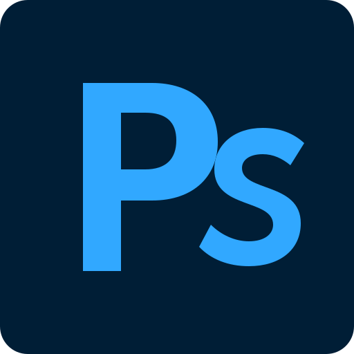

Yaseen Malik.
I am a web developer and creative editor based in Pakistan. Through YSN Works, I build modern, responsive websites and produce high-impact visual media across thumbnail design and video editing.
Bridging Code and Visual Media.
My focus centers on two interrelated disciplines: building clean, responsive web experiences with modern HTML5, CSS3, JavaScript, and GSAP, and crafting high-retention digital visual content.
I believe that website visitors and video viewers judge brands within the first two seconds. Clean typography, fast-loading pages, sharp thumbnail imagery, and engaging video pacing ensure that your message makes an immediate impression.
Creative Focus
“Building digital experiences that stand out through clean front-end engineering, high-CTR thumbnail composition, and cinematic video storytelling.”
Core Areas of Expertise.
How I approach digital craftsmanship across each creative medium.
Modern Front-End Engineering
I build clean, semantic, and lightning-fast websites using vanilla HTML5, CSS3, and modern JavaScript. With GSAP ScrollTrigger and Lenis smooth scrolling, every layout feels tactile and fluid across desktop and mobile devices.
High-CTR Visual Hooks
Utilizing Adobe Photoshop, I create high-contrast YouTube thumbnails designed to maximize click-through rate. Each thumbnail focuses on clear visual hierarchy, expressive cutouts, strong color theory, and bold typography.
Paced Video Storytelling
Using Premiere Pro and CapCut, I edit short-form and long-form video content with smooth pacing, audio synchronization, custom motion graphics, and color grading tailored to retain viewer attention.
Software & Technologies.
Real software and tools used across my development and media workflows.

PhotoshopGuiding Principles.
Performance First
Every website must load fast and scroll smoothly with zero unnecessary bloat or layout shifts.
Visual Hierarchy
High contrast and clear typographic scale ensure visitors immediately understand your message.
Responsive Craft
Mobile layouts receive equal art direction and care as full-screen desktop viewports.
Let's Work Together.
Reach out directly via WhatsApp or email to start your project.